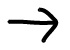

Ana Whelley
cd studio: javascript
parsons school of design
spring 2024
Project 1

Three Links: Create a website that has 2 temporary project links. The work you put on this site will be an extension of your overall design practice, so the visual/ conceptual language of the site should reflect this. (thats this website)
Due: Feb 1st 2024
Project 2
Changing States: Make a website that's principle focus is on the changing between states. The states you choose can be a binary (day vs. night, messy vs. clean, wet vs. dry, hot vs. cold etc.) or exist more on a spectrum (the spectrum of color, temperature, wealth, sound volume, emotion etc.).
Due: Feb 29th 2024
Project 3
Generative Tool: In this project, you will create your own tool using programming concepts like variables, loops, and conditionals. Just like the tools mentioned as examples, your tool will take some form of user input as material and transform it into a visual output. We will look at examples together in class.
Due: May 9th 2024